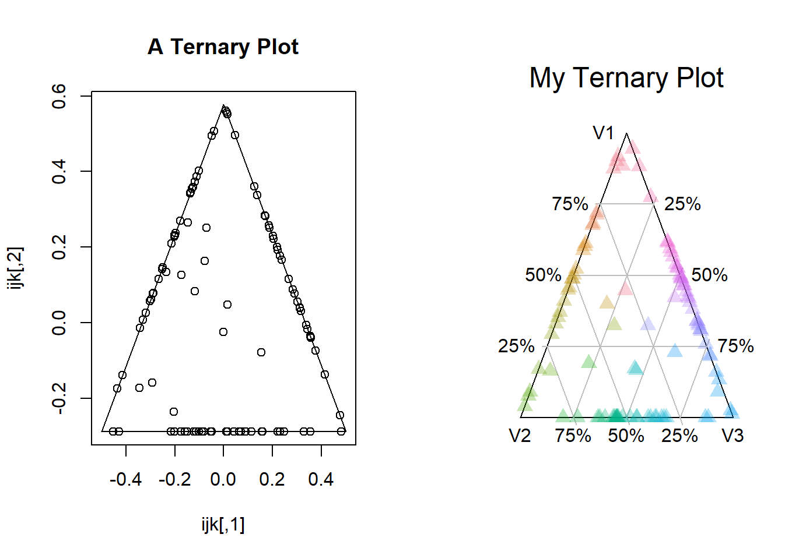

TeaSetClass_vignette.Rmdlibrary(TeaSet)
library(dplyr)
#>
#> Attaching package: 'dplyr'
#> The following objects are masked from 'package:stats':
#>
#> filter, lag
#> The following objects are masked from 'package:base':
#>
#> intersect, setdiff, setequal, unionThis class is built to create ternary graphs and help manipulate ternary data. Ternary data is used to show the ratios between three variables. However, there are not many tools to help construct a ternary graph. The TeaSet class looks to remedy this for R. In this class, the vectors i, j and k are used to indicate moving up, to the bottom-right, and the bottom-left respectively. Similar to three-dimensional coordinates, t-coordinates use an (x,y,z) format–albeit they cannot treat negatives in the same manner. To start, we will create some test data and storing it in a three-column matrix. This data can quickly be graphed with the quick_tea_plot() function.
testData <- as.data.frame(matrix(rnorm(300, sd=10),ncol=3))
names(testData) <- c("Xx","Yy","Zzzz")
quick_tea_plot(testData, main='My Ternary Plot')The axes of a t-plot do not have room for negative values. To handle these, TeaSet redistributes negative values so that they add half their value to the other two coordinates. Thus, (-2,1,1) is treated as (0,2,2), while (-1,-1,-1) cancels out to (1,1,1). Another way that t-coordinates differ from normal 3d xyz-coordinates is that all values are normalized. In 3d space, (1,1,1) and (100,100,100) are far from one another, in a t-plot they occupy the same space. When graphed in two-dimensions, all t-points are divided by their maximimum value.
testData <- as.data.frame(matrix(rnorm(300, sd=10),ncol=3))
teaSet <- brew_tea(testData)
temp<- t(teaSet$p_redistribute_negatives()) # p_ methods are intended for internal class use, but are still accessible
temp<-as.data.frame(temp)
temp<-cbind(temp,t(teaSet$p_normalize_ternary_pt()))
names(temp) <- c("X_No_negs","Y_No_negs","Z_No_negs","X-Normal","Y-Normal","Z_Normal")
head(temp)
#> X_No_negs Y_No_negs Z_No_negs X-Normal Y-Normal Z_Normal
#> 1 10.28036 0.000000 27.404803 0.2727960 0.0000000 0.7272040
#> 2 14.49206 8.398399 5.700979 0.5068671 0.2937383 0.1993946
#> 3 21.44570 0.000000 19.814061 0.5197728 0.0000000 0.4802272
#> 4 0.00000 4.644348 11.799058 0.0000000 0.2824444 0.7175556
#> 5 0.00000 12.200667 16.880909 0.0000000 0.4195325 0.5804675
#> 6 0.00000 14.612622 32.353843 0.0000000 0.3111288 0.6888712The workhorse functions of this package are get_ijk() and get_xy(). The get_ijk() method provides the three vectors that the get_xy() method uses to calculate xy-coordinates. These points are also the vertices of the border triangle for the t-plot. With these two functions one can easily make a ternary plot; however, there are many additional steps if one wants a presentable t-plot.
The easiest way to plot ternary data is with the quick_tea_plot() function–which only needs a set of ternary data as an argument. Quick_tea_plot() simply calls the packages main plotting method, tea_plot() with a number of presets.
testData <- as.data.frame(matrix(rnorm(300, sd=10),ncol=3))
layout(matrix(c(1,2), nrow=1, byrow = TRUE))
ijk <- teaSet$get_ijk()
xy <- teaSet$get_xy()
plot(ijk, type = 'l', main ="A Ternary Plot")
points(xy)
quick_tea_plot(testData, main = "My Ternary Plot")
The main plotting function in TeaSet is tea_plot(), which can be accessed as a function or a method attached to a TeaSet object. The one difference betweeen the two is that the former always plots myCoord, whereas the latter merely defaults to myCoord--allowing other data to be provided. The tea_plot() function can take most of the same arguments as plot(), though the only one of these explicity included is a parameter is main for the title. Most graphical parameters, such as frame.plot, pch and cex work also work. This makes tea_plot() mostly compatible with par().
Some standard plot() parameters work differently, or not longer work at all. The col parameter in particular can take several inputs other than normal colors: "gradient" and "contrast" both provide colors that change with a point's location in the plot. One can also add degrees to gradient, which is based on hcl(), to rotate the palette--simply input "gradientYYY" where YYY is the number of degrees to rotate.
such as xlab and ylab no longer work--they do not make sense for a ternary plot. The xlab and ylab parameters on the other hand make little sense for a ternary plot, and no longer work.
The newPlot variable, defaulting to TRUE, allows one to decide whether to use tea_plot() to start a new visual, or draw atop a previous one. This is most effective in conjunction with the set_frame() method.
There are several options for drawing ticks or similar lines to help distinguish values. Setting bullseye=TRUE will draw a Y-shape in the center of the plot, seperating it into an i-leaf, j-leaf, and k-leaf. This can be particularly useful in determining which of x, y and z, is the greatest for border-cases. The ticks variable allows one to draw reference lines to help determine the values of x, y and z--it can be set to TRUE (in which case these are drawn at 25%, 50% and 75%), an integer (in which case it draws integer -1 lines for each axis), or a numeric list (in which case it will draw the lines at the values provided in the list). The color of both the bullseye and ticks is set by col.axis, which defaults to grey. By default, these lines are not drawn.data(mtcars)
mtcars %>%
select(mpg,cyl,wt) %>%
normalize("minmax") %>%
brew_tea() %>%
tea_plot(main="Car balance of mpg, cyl & wt",col="gradient90",pch=16,cex=1.5)data(USArrests)
testData<-USArrests[seq(2,50, by=5),]
names(testData)<-c("Crime1","Crime2","Pop","Crime3")
rownames(testData)<-substr(rownames(testData),1,3)
testData %>%
select(Crime1,Crime2,Crime3) %>%
normalize() %>%
brew_tea() %>%
tea_plot(main = "Types of Crime",dataLabels=TRUE,col="contrast",alpha=1)Those looking to incorporate a ternary plot into their visuals could be more interested in incorporating it into a large plot rather than having it stand alone. One may also be interested in plotting several ternary plots in the same visual. While par() and layout() offer many options, TeaSet comes with some built-in options to move and stretch the t-plot. This is the set_frame() function, which either takes a frame in the form a list of two x-coordinates and another of two y-coordinates, or one can input the new center and horizontal/vertical stretch directly. If inplace=TRUE, these will be used to overwrite the TeaSet object's myCenter and myStretch, and update myIJK. To reset these to default, one can simply input set_frame(inplace=TRUE), and the argument defaults will return the plot to default inputs.
Moving the frame around while graphing requires the use of the tea_plot() method, as one needs a TeaSet object with non-default myCenter, myStretch and myIJK values. The quick_tea_plot() function simply creates a TeaSet object and then calls tea_plot().testData <- as.data.frame(matrix(rnorm(300, sd=10),ncol=3))
plot(c(-2,2),c(-2,2),type='n',frame.plot=FALSE,axes=TRUE,ylab="",xlab="")
# returns<- is simply to hide the return-values for set_frame()
returns<-teaSet$set_frame(xFrame = c(-2,-1),yFrame = c(1,-2),inplace=TRUE)
teaSet$tea_plot(newPlot=FALSE, main="Plot1",pch=17,cex=1.5,axis.labels=FALSE)
returns<-teaSet$set_frame(xFrame = c(-2,2), yFrame = c(1.8,1.3),inplace=TRUE)
teaSet$tea_plot(newPlot=FALSE, main="Plot2",pch=17,cex=1.5,axis.labels=c("","",""))
returns<-teaSet$set_frame(xFrame = c(2,1), yFrame = c(1,-2),inplace=TRUE)
teaSet$tea_plot(newPlot=FALSE,main="Plot3",pch=17,cex=1.5,axis.labels=c("Blue","Sharp","Moldy"))
returns<-teaSet$set_frame(center = c(0,-1.5),stretch=c(2,1),inplace=TRUE)
teaSet$tea_plot(newPlot=FALSE,main="Plot4",type = 'l',cex=1.5,axis.labels=NA) # not really built for lines but...can do it.
#> Warning in polygon(...): graphical parameter "type" is obsolete
returns<-teaSet$set_frame(inplace=TRUE)
teaSet$tea_plot(newPlot=FALSE,main="Plot5",pch=17,cex=1.5,axis.labels=TRUE)Always trying to shift from an xy-coordinate system to ternary coordinates can be rather difficult, and involve a lot of trigonometry. To this purpose, three drawing functions have been provided to make it easier to draw lines, line segments, and triangles in a ternary space. These functions are: tea_lines(), tea_segments(), and tea_triangles(). All three functions are tied to myCenter, myStretch and myIJK, so they will always draw properly within the frame of their TeaSet object.
The tea_triangles() method draws a triangle similar to the area of a t-plot. If that area is stretched vertically or horizontally, so too will the tea_triangle(). This makes it useful for drawing the outline of a ternary plot, or creating triangles within it. The key parameters in a tea_triangle are r, which represents its size relative to the TeaSet object's border triangle; and xy, which determines where to draw the triangle. If jCorner=TRUE, this will be the corner indicated by the j-vecotr, otherwise it indicates the center of the tea_triangle. One can even input negative values for r to get an inverted triangle.
The flexibility of tea_triangle() is shown with the tea_gradient_background() function, which creates rows of using the tea_triangle() method of slighlty varying colors. The more rows specified, the finer the gradient is--but at rows=100, the function is drawing 5,050 triangles, which may slow one's program. One can also specify alpha, which controls how transparent the background is.
The tea_lines() method can draw a line with only one value of x, y or z. With ternary coordinates, one can define a line with only one of x, y or z. Setting X equal to 0.10 means 0.10 = x/(x+y+z), delineating a line between two sides of the triangle. The function can also work with lists of arguments for x, y and z, each number delineating a seperate line. There is also an additional parameter, overDraw c(boolean,boolean), which if set to TRUE will cause the line to go slightly outside the t-plot area. This is useful if one is labeling tick-marks, as otherwise each tick-label could indicate two different lines.
The tea_segments() method on the other hand simply takes two t-points as inputs (either as seperate inputs, a 6-length list, or 3/6-column matrix), and draws a segments from the first to second line. The method uses the segments() function to draw, and can pass on many arguments to it. Moreover, the function plot(c(-1,1),c(-1,1),type='n',frame.plot=FALSE,axes=TRUE,ylab="",xlab="", main = "tea_lines(x=.2) & tea_lines(y=1:10/10, overDraw=c(T,F))")
returns<-teaSet$set_frame(xFrame = c(-1,0),yFrame=c(-1,1),inplace=TRUE)
returns<-teaSet$tea_triangle(alpha=0.2,border=NA)
returns<-teaSet$tea_lines(x=.1,col="black",lwd="2")
returns<-teaSet$set_frame(xFrame = c(0,1),yFrame=c(-1,1),inplace=TRUE)
returns<-teaSet$tea_gradient_background(rows=24)
returns<-teaSet$tea_lines(y=1:9/10, overDraw = c(TRUE,FALSE),col='black',lwd=3,lty=2)The tea_lines() function ultimately calls the tea_segments() function, which simply converts t-coordinates to xy-coordinates and then calls the normal segments() function to draw the line. The tea_segments() function works with a variety of inputs. The “normal” way to call it would be two 3-length lists representing t-points, but it also works with a 6-length list representing two t-points. Likewise, it can handle 3-column and 6-column matrices.
layout(matrix(1:2, nrow=1, byrow = TRUE))
plot(teaSet$get_ijk(), type = 'l', frame.plot=FALSE,axes=FALSE,ylab="",xlab="",main="tea_lines() w/ overDraw = c(F,T)")
returns<-teaSet$tea_lines(x=1:2/2,y=1:9/10,z=1:3/4, overDraw=c(FALSE,TRUE),lwd=2,lty=3)
returns<-test<-matrix(c(1,0,0,0,1,1,
0,1,0,1,0,1,
0,0,1,1,1,0),ncol=6,byrow=TRUE)
plot(teaSet$get_ijk(), type = 'n', frame.plot=FALSE,axes=FALSE,ylab="",xlab="",main="Segments")
teaSet$tea_gradient_background(rows=50,alpha=1)
returns<-teaSet$tea_segments(test,lwd=3)There is also a quick_triangle() function to allow the use of tea_triangles without needing to create a TeaSet object. It follows the same parameters: r to indicate the size of the similar triangle, and center to indicate where to draw it. However, this is best understood as a wrapper aroundthe polygon function, and does not rely on creating a TeaSet object within itself. As it does not rely on myStretch, these are always equilateral triangles. One final aspect of all of these function is that they have a draw=T/F paramter, and they return the coordinates used to draw them. Thus, one could call the tea_lines() function simply to get the coordinates to input into another geometric function. However, this is not the most wieldy way to draw polygons.
layout(matrix(1:2, nrow=1, byrow = TRUE))
plot(c(-1,1),c(-1,1),type='n',frame.plot=FALSE,axes=FALSE,ylab="",xlab="",main="quick_triangle()")
returns<-quick_triangle(1:9/6)
returns<-quick_triangle(-1*1:4/8,center=c(0.5,-0.75),lwd=3)
returns<-quick_triangle(-1*1:4/8,center = c(-0.5,-0.75),lwd=2)
plot(teaSet$get_ijk(),type='l',frame.plot=FALSE,axes=FALSE,ylab="",xlab="",main="tea_lines data fed into polygon")
poly <-(teaSet$tea_lines(x=c(.2,.3),draw=TRUE))
poly <- matrix(poly,ncol=2,byrow=TRUE)
polygon(poly[c(1,3,4,2),],col="blue")